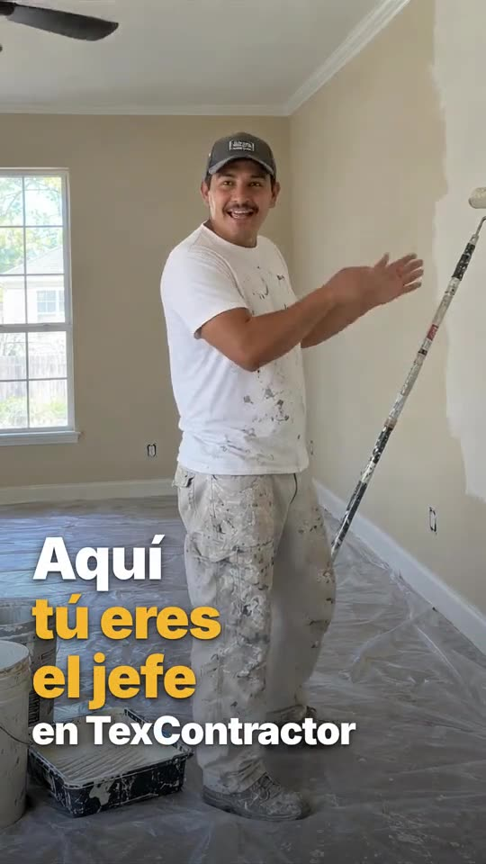
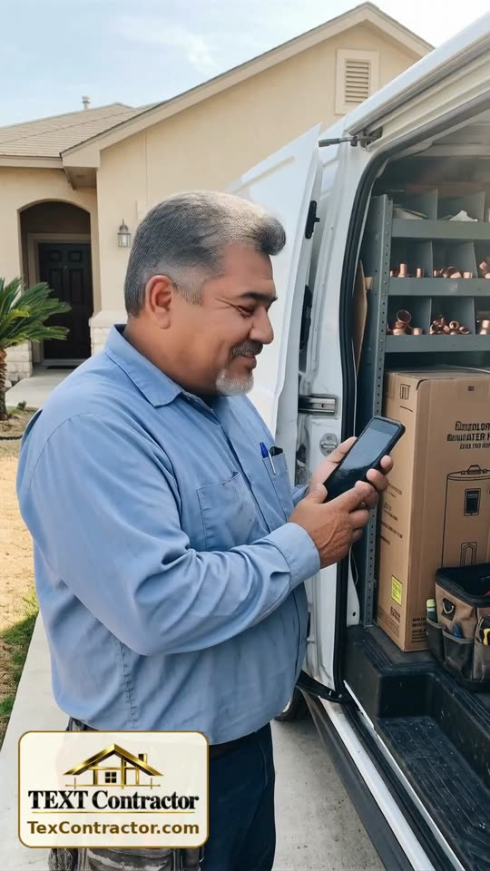

TexContractor videos
Short videos in English and Spanish about finding a local pro in Texas, texting technicians directly, and listing your service for free. Videos en inglés y español.
EnglishGet More Local Jobs in Texas: List Your Service on TexContractor

EspañolAquí tú eres el jefe: publica tu servicio en TexContractorEnglishSkilled Tradesman in Texas? List Your Service Free and Get Texts From Local CustomersEspañol¿Necesitas un plomero o un electricista en Texas? Encuéntralo y escríbele directoEnglishCar Won't Start in a Parking Lot? Text a Local Mechanic in SecondsEspañol¿No arranca la troca en el estacionamiento? Escríbele a un mecánico cercaEnglishTired of Paying for Leads? Get Texas Customers to Text You Directly
Español¿Cansado de pagar por clientes? Que los clientes en Texas te escriban directoEnglishNeed a Babysitter Tonight? Find a Local Sitter on TexContractorEspañol¿Necesitas niñera hoy? Encuentra una cerca en TexContractorEnglishAC Quit in the Texas Heat? Text a Local AC Tech in MinutesEspañol¿Se descompuso el aire en pleno calor? Escríbele a un técnico localEnglishNo App Needed: Add TexContractor to Your Home ScreenEspañolSin descargar apps: agrega TexContractor a tu pantalla de inicioEnglishTechnicians: 3 Simple Ways to Build Customer TrustEspañolTécnicos: 3 formas sencillas de ganarse la confianza del clienteEnglishDishwasher Broke? Text a Local Pro and Get It DoneEspañol¿Se descompuso el lavaplatos? Escríbele a un profesional localEnglishWhat Do Texans Call For the Most? AC, Plumbing and Pest ControlEspañol¿Para qué llaman más los texanos? Aire, plomería y plagas